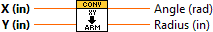
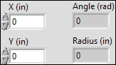
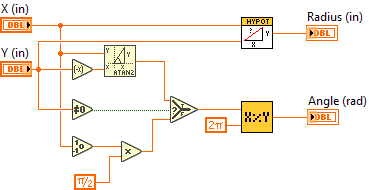

CoordinateConvert_CartesianToArm.vi
Connector Pane

Front Panel

Controls and Indicators
|

|
X (in) |
|
|
Y (in) |
|

|
Angle (rad) |
|
|
Radius (in) |
Block Diagram

List of SubVIs and Express VIs with Configuration Information
VI Revision History
"CoordinateConvert_CartesianToArm.vi History"
Current Revision: 11
Position in Hierarchy

Iconified Cluster Constants